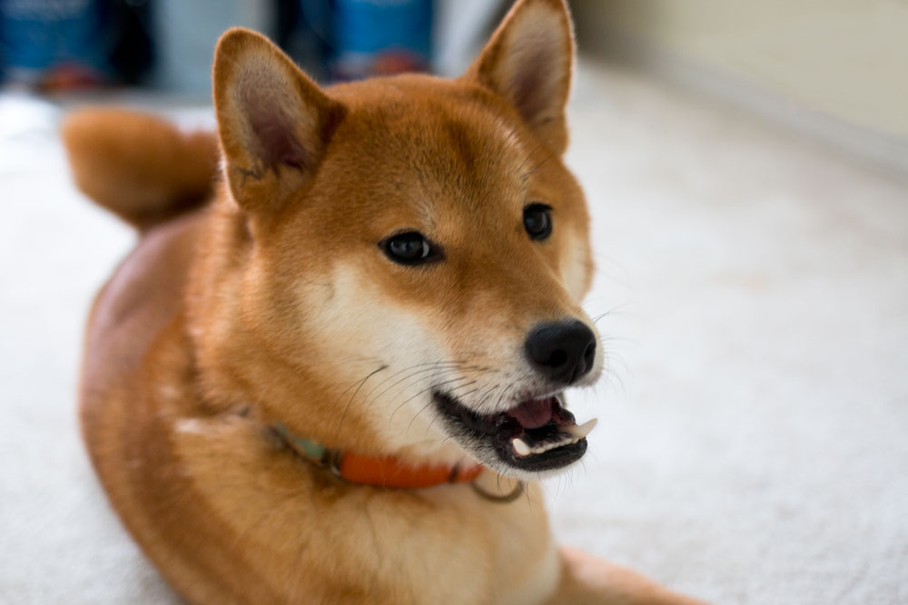
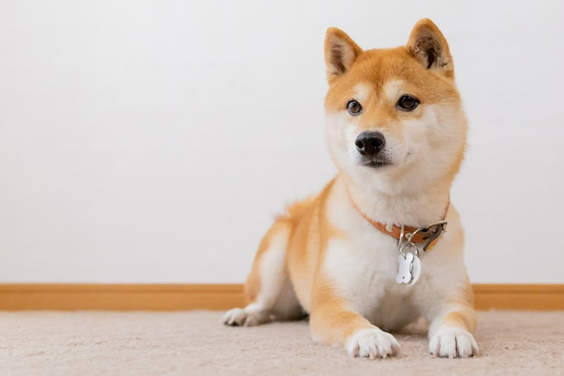
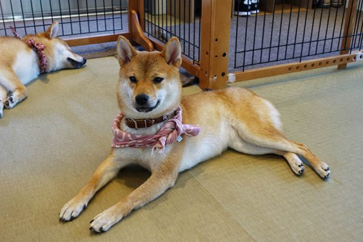

What you might need to know
Personality

Shiba Inus are known for their strong, independent personalities. While they are often affectionate with their owners, they tend to have a more aloof and self-reliant nature compared to other dog breeds. They are intelligent and can be stubborn, which means training may require patience and consistency. Shibas have a "cat-like" quality, often preferring to do things on their own terms. Despite their independent streak, they form strong bonds with their families and can be very loyal. However, it’s important to remember that they are not typically "cuddle dogs," and may enjoy their space rather than constant physical attention.
Social Needs

Shibas are not as eager to please as some other breeds, so they can be more challenging in social settings. Early socialization is crucial for Shiba puppies to ensure they grow into well-rounded adults. While they can get along with other dogs, they have a strong prey drive, and their instincts might make them less tolerant of small animals, including cats or rabbits, unless raised together from a young age. Shibas are generally good with their family members, but they may be more reserved or cautious with strangers. Regular exposure to different people, animals, and environments can help them feel more comfortable in social situations.
Environment and Care

Shiba Inus are active, energetic dogs that thrive in environments where they can get plenty of exercise. They enjoy walks, runs, and mental stimulation, making them well-suited for active owners who can provide regular outlets for their energy. A securely fenced yard is ideal for them to safely burn off steam, as Shibas can be escape artists. Their thick, double-layer coat requires regular brushing to manage shedding, particularly during seasonal changes. They are generally clean dogs and often groom themselves like cats, but they still benefit from a consistent bathing and grooming routine. Shiba Inus also have a tendency to be escape artists, so ensuring a secure home environment is important to keep them safe.
Tribute To The Shopkeeper

In a quiet corner of Tokyo, a small convenience shop once became something extraordinary thanks to its most endearing “shopkeeper,” a Shiba Inu who greeted visitors from behind a sliding window with calm curiosity and charm. This beloved dog brought smiles to locals and people around the world, turning an ordinary storefront into a symbol of warmth and simple joy. Though he has now passed, his gentle presence and the happiness he shared continue to live on in the memories of those who encountered him, a reminder that even the smallest, everyday moments can leave a lasting impression.